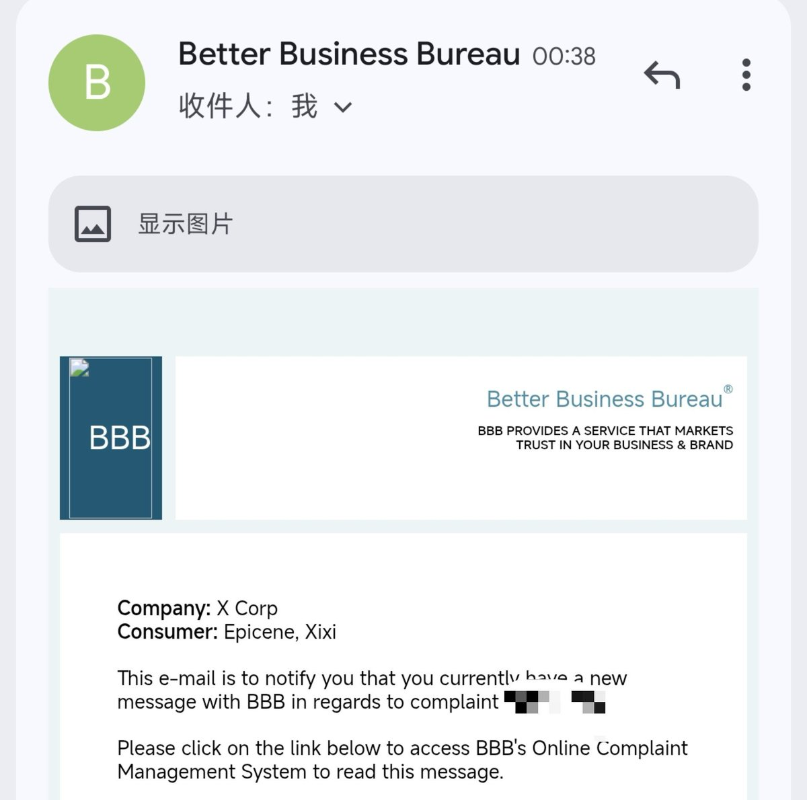
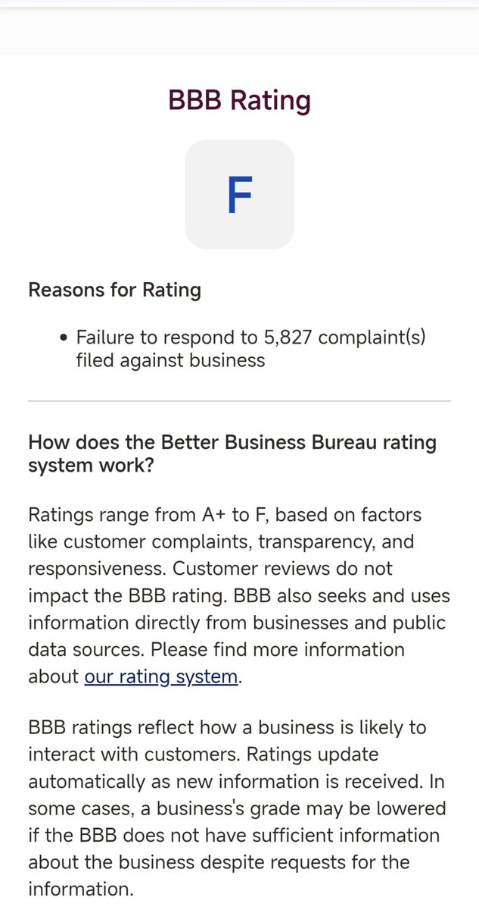
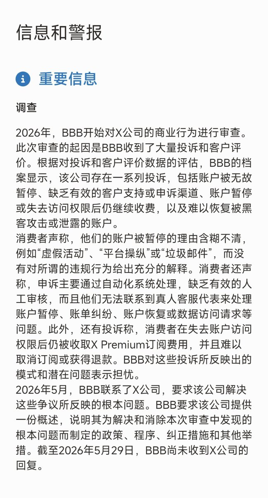

是早露泡泡兔呀
@Poca2381
@xixi_epicene 逆天



汐矽
@xixi_epicene
号回来了
开蓝勾后推特把我所有帖子打上了敏感内容，还不能申诉，限制帖子的可见性，和蓝勾的宣传不符
所以我以虚假宣传，欺诈用户等缘由向美国的BBB投诉推特
推特反手就封号——经典美国思维解决人=解决问题，然后反咬一口说你在中国用推特违法——然而我并不在
最后申诉恢复账号，但推特拒绝任何投诉 https://t.co/JfeZImIIFJ